After finishing the BSDF, I noticed a significant color darkening as roughness increased. The issue was that single scatter GGX that I use is not energy conserving, that's because of two reasons. First, when the $L$ is sampled, it is possible for ray to bounce into the surface instead of out of it (or the other way around for refraction). In that case I just discard the sample, which means that the energy is lost completely. And the second reason, the masking function destroys light occluded by other microfacets. That's bad because increasing roughness of a surface introduces visible darkening of the color. This is especially visible in rough glass where light bounces multiple times. If I increase the roughness on previously showcased materials it's clearly visible.
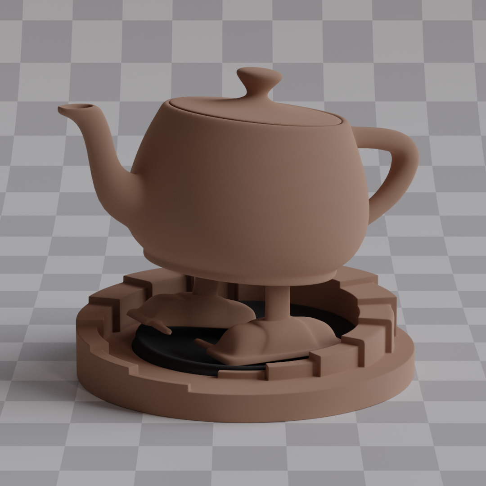
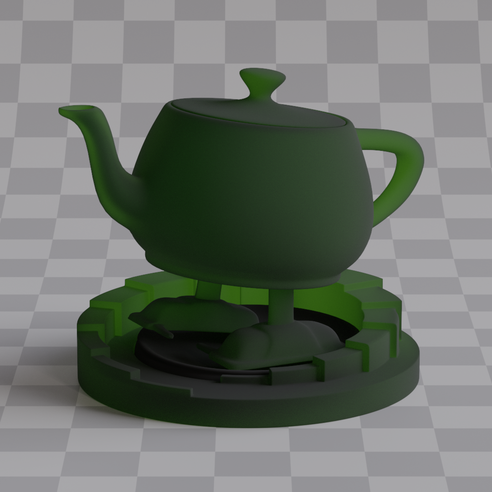
This is a known issue, and one way to fix this is simulating multiple surface scattering, accounting for the fact that light can bounce multiple times on a microsurface, just like [Heitz 2016] suggests. The problem is that: 1. it's not that easy to implement, and 2. according to [Turquin 2019] properly simulating multiple scattering can be from 7x to even 15x slower. So instead I decided to use energy compensation lookup tables implemented according to [Turquin 2019]. They're easy to compute and implement, but most importantly, they're fast.
So first of all, as a way of verifying my implementation, I used something called Furnace Test. In a uniformly lit environment, non absorbing materials should be invisible since they reflect exactly what they receive, but my BSDF was clearly failing this test. On the left is rough metal, while on the right is rough glass, both have roughness set to 1.
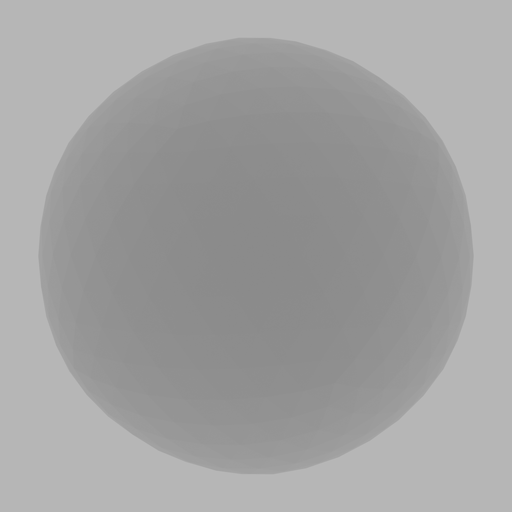
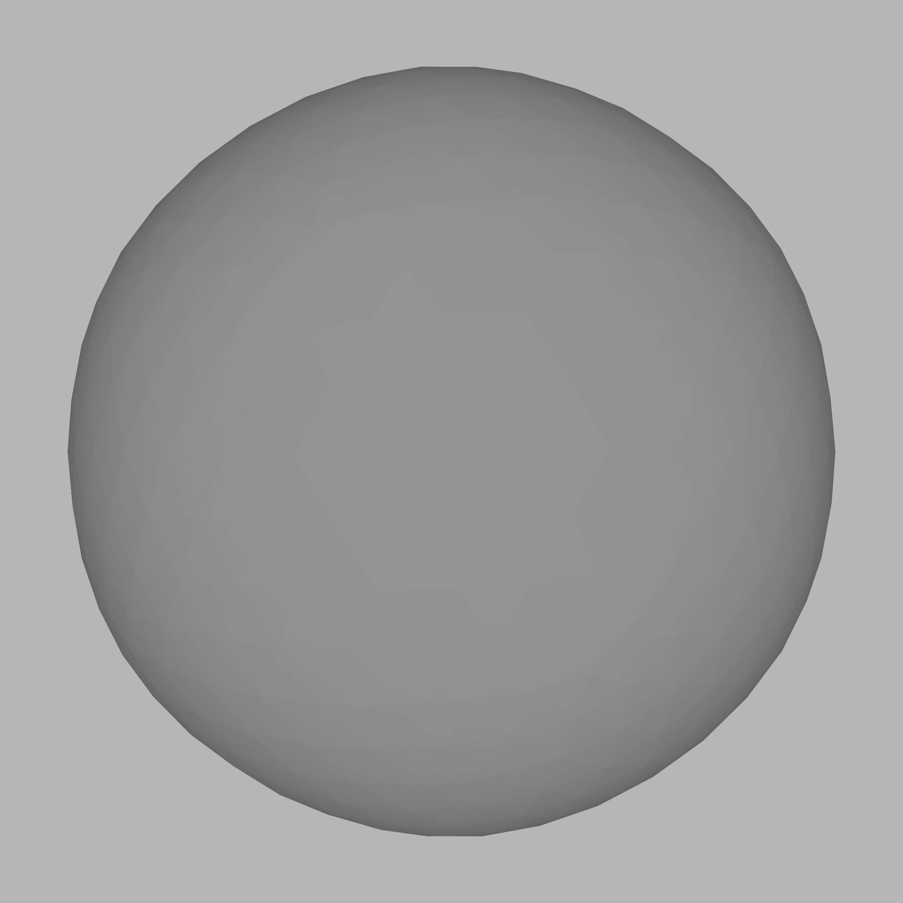
The CPU code for generating LUTs (Lookup Tables) is in the LookupTableCalculator.cpp file. The class itself is pretty simple, you give it a shader alongside the LUT size, it executes that shader repeatedly until all samples have been accumulated, and then it returns the lookup table as a vector of floats. Computing these LUTs can take some time depending on the precision you want, so I decided to cache them on disk in Assets/LookupTables as binary files and later load them as textures for the path tracer to use. The computation of the samples is done fully on the GPU, it could be just as easily implemented on the CPU, but of course it would be much much slower. And considering that I compute trillions of samples for each LUT, the performance is a pretty big consideration here, even on the GPU they take several minutes to compute.
The first LUT is the reflection LUT, it's used to compensate metallic and dielectric lobes, since they are reflection only. Code for computing the energy loss is in `LookupReflect.slang`. I decided to use 64x64x32 LUT for the reflection. After taking 10 million samples per pixel (1'310'720'000'000 in total) I ended up with this:
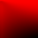
Reflection LUT. X axis represents viewing angle ($\mathbf{V} \cdot \mathbf{N}$) and Y axis represents surface roughness.
As you can see, most energy is lost at high angles with high roughness (Lower right corner, both X and Y are high, since (0, 0) is left top corner).
But the reflection LUT is 3 dimensional, and the third parameter is anisotropy, but this one is tricky, that's because the energy loss is dependent on the viewing direction, not just angle this time. So to properly compute energy loss for anisotropy, I'd actually need to add even more dimensions to the table. But I decided not to do that, the LUT still gets most of the energy from anisotropy back, and the anisotropy itself is used so rarely that I decided it's not really worth the hassle, since bigger LUT means more memory used and that directly translates to the performance.
Glass LUT is computed in a similar fashion with a couple of small differences. First, instead of computing the energy lost during reflection, the energy loss during both reflection and refraction is computed. Second, the LUT has to also be parameterized by IOR, so the third dimension of the LUT is IOR instead of anisotropy this time. And lastly, 2 different LUTs have to be computed for glass, the differentiation between ray hitting the surface from inside the mesh and ray hitting the surface from outside the mesh has to be made. That's because IOR changes based on that fact. I decided to use 128x128x32 LUT this time because the glass needs a lot more precision than simple reflection. Also x coordinate is now parameterized with $(\mathbf{V} \cdot \mathbf{N})^2$ because more precision is needed on small angles. The code can be found in `LookupRefract.slang`. After accumulating 10 million samples per pixel (5'242'880'000'000 in total) I get this: (Both are slices of the third dimension with IOR 1.5)
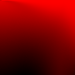
Inside Refraction Lookup
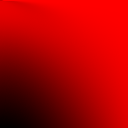
Outside Refraction Lookup
After getting the tables the rest is simple, I just use the equations from the paper: For metallic and dielectric reflection: $$ f_\text{ms} = (1 + F_0 \cdot \frac{1 - E_\text{ss}}{E_\text{ss}}) \cdot f_\text{ss} $$ with $E_\text{ss}$ being the value from the LUT. $f_\text{ss}$ being the single scattering BRDF that's evaluated. And $f_\text{ms}$ being final multi scatter approximation. and for glass $$ \begin{gather*} f_\text{ms}^R = \frac{f_\text{ss}^R}{E_\text{ss}}\\ f_\text{ms}^T = \frac{f_\text{ss}^T}{E_\text{ss}} \end{gather*} $$ And that's it. To verify whether the compensation is actually working a furnace test can be used again. Here's side by side comparison. The difference is clearly visible.
No Compensation Applied
Compensation Applied
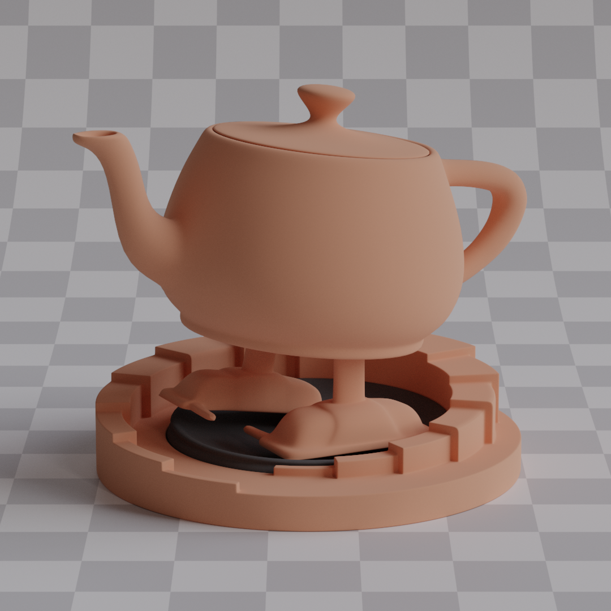
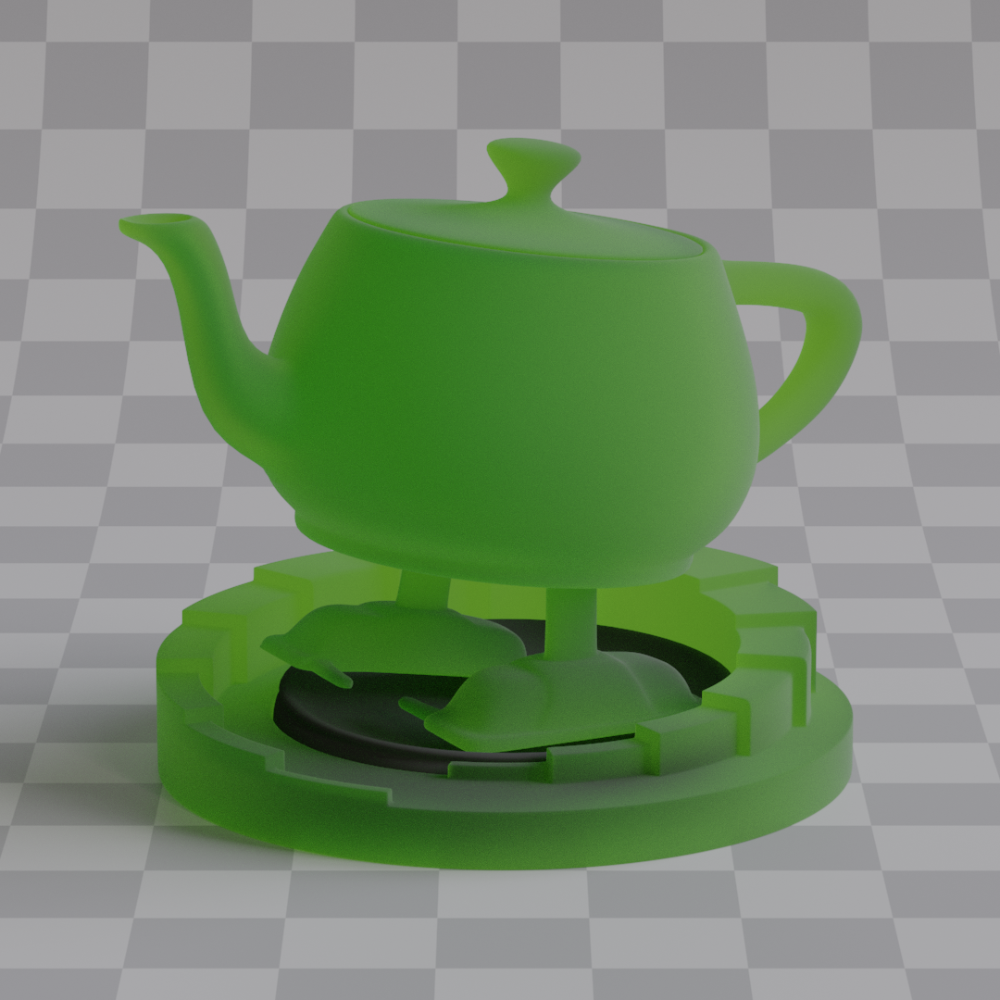
Now, the metallic furnace test is pretty much indistinguishable without turning up the contrast, but in the glass furnace test, if you look closely, you'll see that the compensation is not perfect. That's because the tables are just approximations, they have limited dimensions, and a limited number of samples is taken, and that's causing some issues down the line. But that's okay, the couple percent of energy loss or gain are barely visible even in the furnace tests, let alone in complex scenes, and the simplicity of the solution along with its speed make it a much more preferable option from [[Heitz 2016]](https://jo.dreggn.org/home/2016_microfacets.pdf) approach. Making path tracer 100% energy conserving and preserving has almost no benefits, and the amount of performance that's sacrificed in the process is very noticeable. The only important thing to me, is that there is no longer any color darkening visible with a naked eye. Rough glass was impossible to simulate since it turned black really fast. And the color on the metal surface was very saturated and darkened. Now there's none of that. So the key point is that both problems are solved.
And even though anisotropy is not computed correctly (the viewing direction is not accounted for), it still looks quite good, most of the energy lost is being retrieved back.
No Compensation Applied
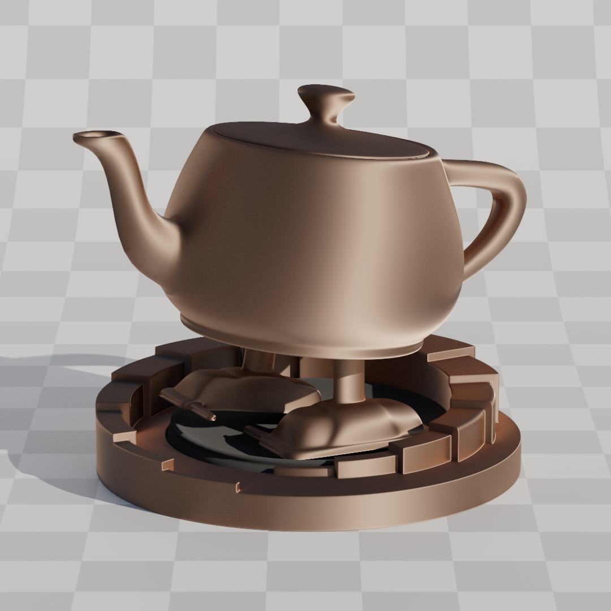
Compensation Applied
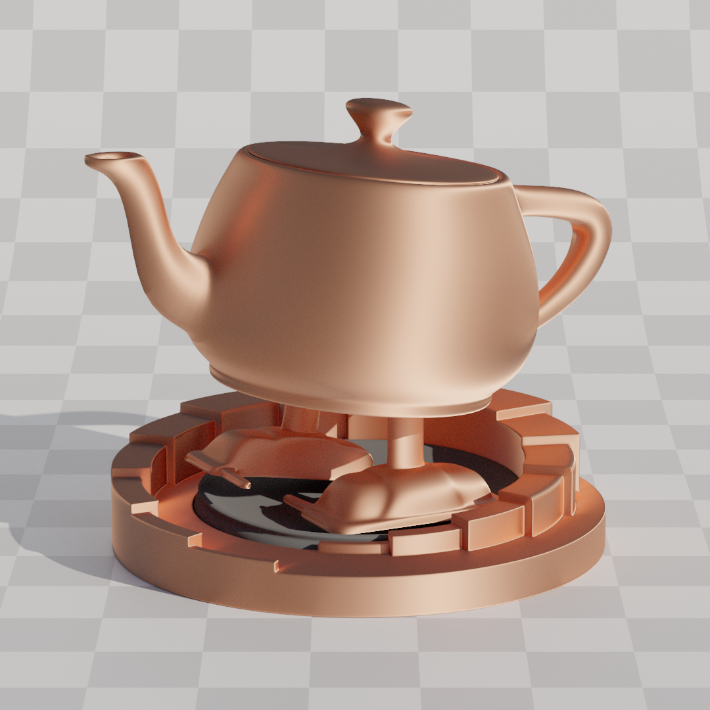
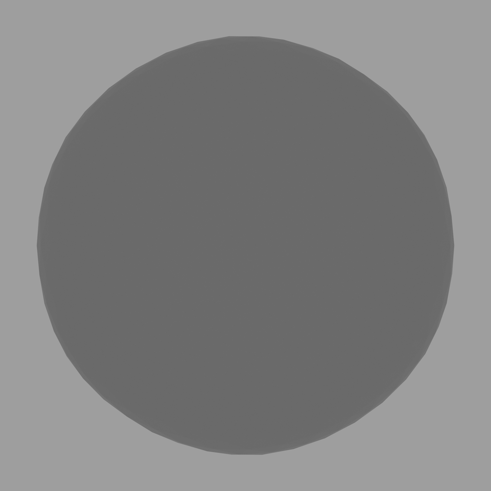
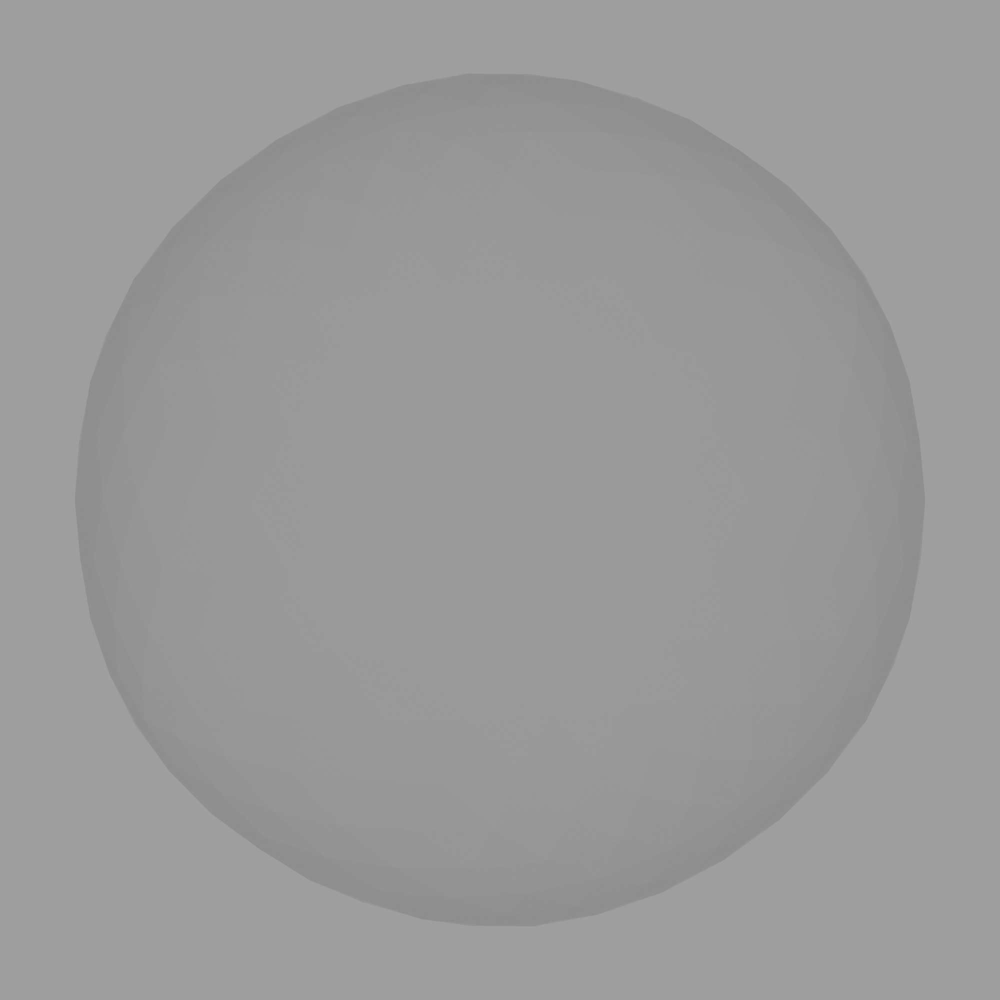